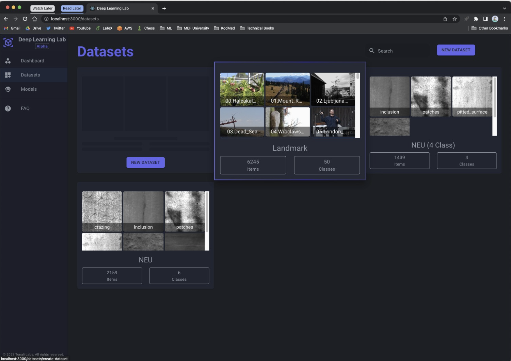

|
I am a machine learning engineer at KodMed in Istanbul where I work on computer vision and machine learning in healthcare. I have expertise in software development and integrating machine learning techniques into healthcare projects. My work focuses on developing advanced models for image analysis, classification, and detection tasks in medical imaging to improve diagnosis and treatment. I also have experience working with MLOps stack that enable users to train deep learning models, evaluate their performance, spot errors in their data, and importing and exporting data to other services. I collaborate with cross-functional teams to deliver high-quality results, and am proficient in utilizing various technologies and tools to achieve these goals. My vision is to develop innovative technologies using AI in healthcare. One specific area I am interested in is using AI for early diagnosis and personalized treatment plans for diseases. Additionally, I believe that AI can also play a role in streamlining and improving the efficiency of clinical research and drug development. Email / Google Scholar / Twitter / Github / LinkedIn |
{kind=link}
|
|
|
 |
Github Train and inference your deep learning models on the web app without coding. Running a React on front-end, Flask API on back-end, MongoDB as a database, WebSocket for streaming data, and PyTorch for model training. React and Flask are containerized and managed with Docker Compose. |

|
Github I aimed to make using pre-trained deep learning models simple and accessible through a user-friendly graphical interface, eliminating the need for additional coding and simplifying the setup process. Progress can be monitored in real-time using tools such as TensorBoard. |
|
I'm interested in computer vision, machine learning and healthcare. Much of my research is about transforming healthcare with AI. |

|
Mustafa Mert Tunali, Ahmet Yildiz, Tuna Cakar Publisher: IEEE Conference: 2022 7th International Conference on Computer Science and Engineering (UBMK) This study aims to use deep learning to improve quality control in production lines by classifying steel surface defects using a limited data and computing power. |
Last updated: January 20, 2023
Website template is from Jon Barron